Gammeleksgården Fiestas & bodas
Celebra en el campo y quédate a dormir en la fincahasta 80 invitados sentados
Alquila el salón de fiestas para bodas, cumpleaños de 50 o fiestas de empresa. Con 20 habitaciones en la misma casa, los invitados se ahorran el taxi de vuelta, y a la mañana siguiente os encontráis para tomar un café antes de que todos se vayan a casa.

- Sentados
- 80 invitados
- De pie / cóctel
- 120 invitados
- Habitaciones en el lugar
- 20 habitaciones
- Aparcamiento
- Gratuito, en la finca
- Pista de baile
- Sí, en el salón grande
- Música
- Podéis poner vuestra música
- Exterior
- Terraza y patio
- Accesibilidad
- Salón accesible
Ocasiones
¿Qué celebráis?
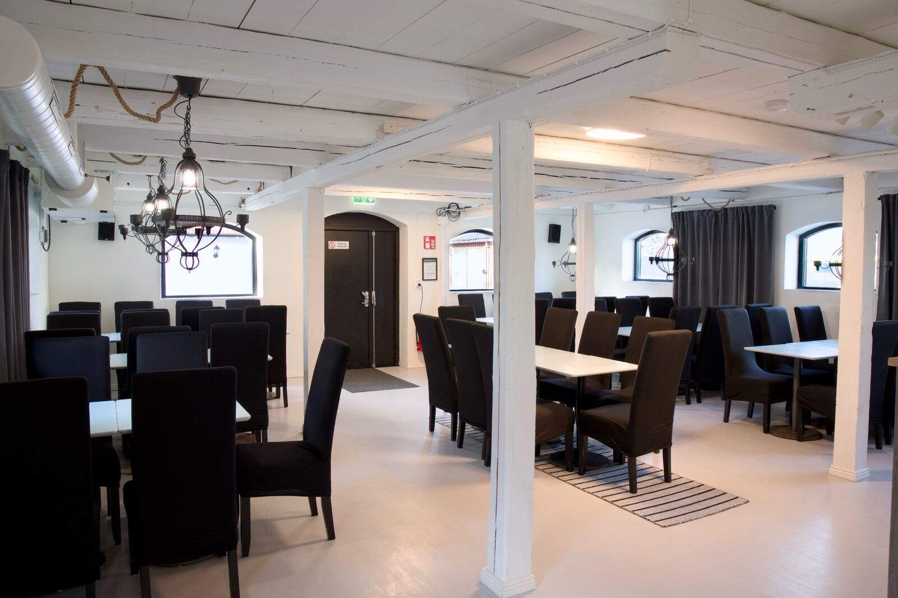
Bodas
Ceremonia en la finca, cena en el salón y habitaciones para los novios y los invitados.
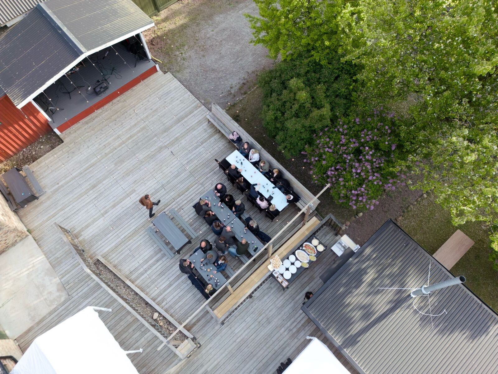
Cumpleaños
30, 50 u 80. Fiesta toda la noche y la cama un piso más arriba.
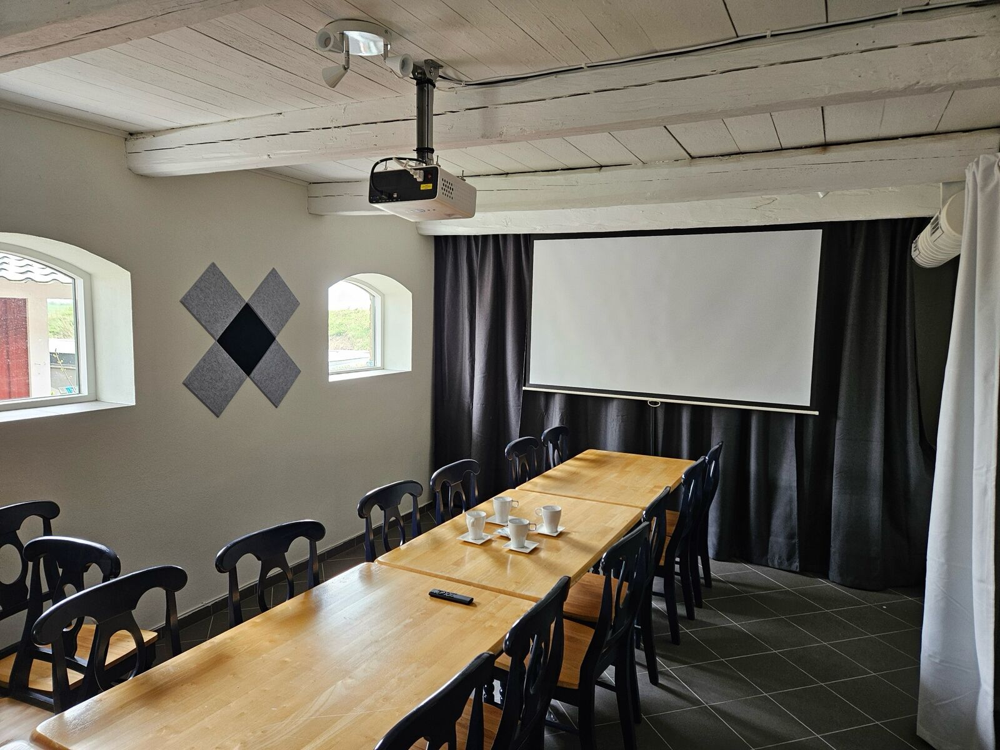
Empresas
Kickoff, comida de Navidad o conferencia con alojamiento, cerca de la E6.
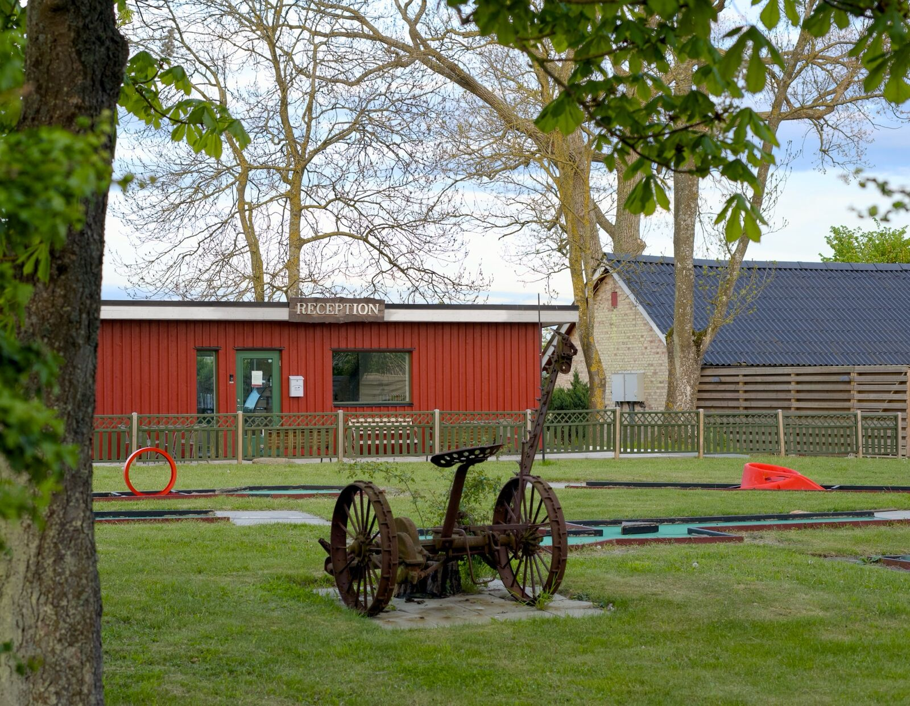
Familia & asociaciones
Reuniones familiares y fiestas de asociaciones, con minigolf para los niños.
Ejemplos de montaje
Ilustraciones: nuestras propias fotos del local, preparadas digitalmente para mostrar cómo podría quedar. Vosotros montáis y decoráis, o con un catering.
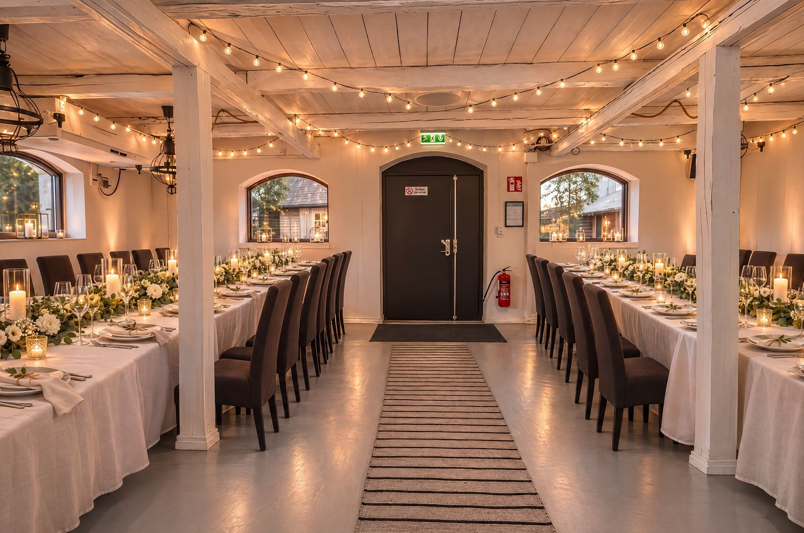
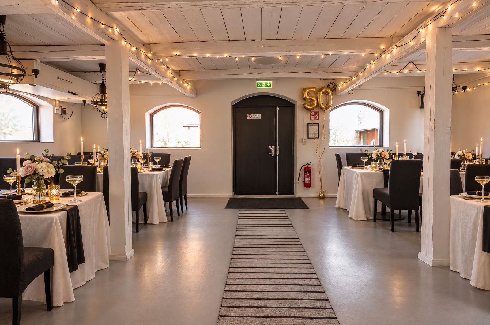
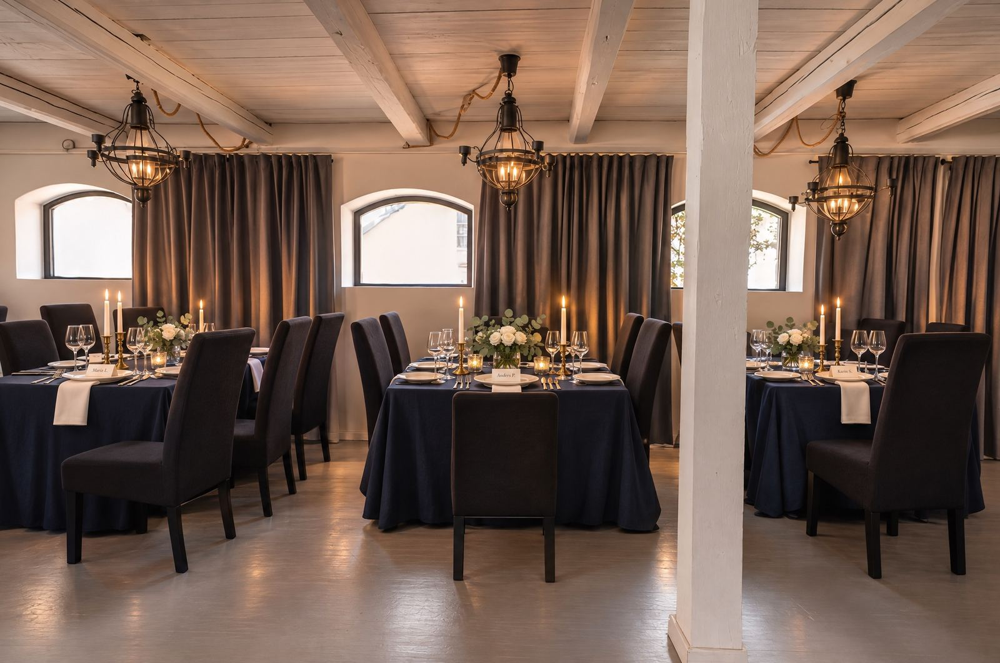
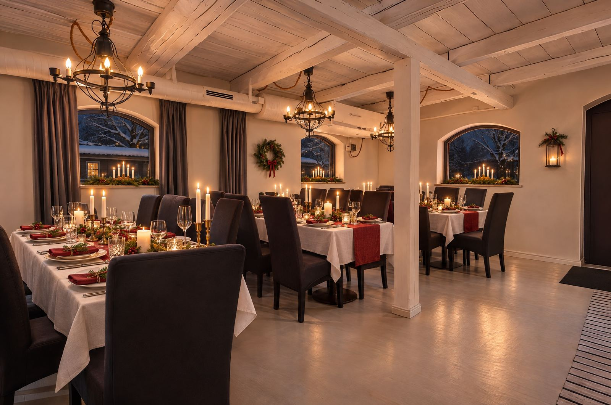

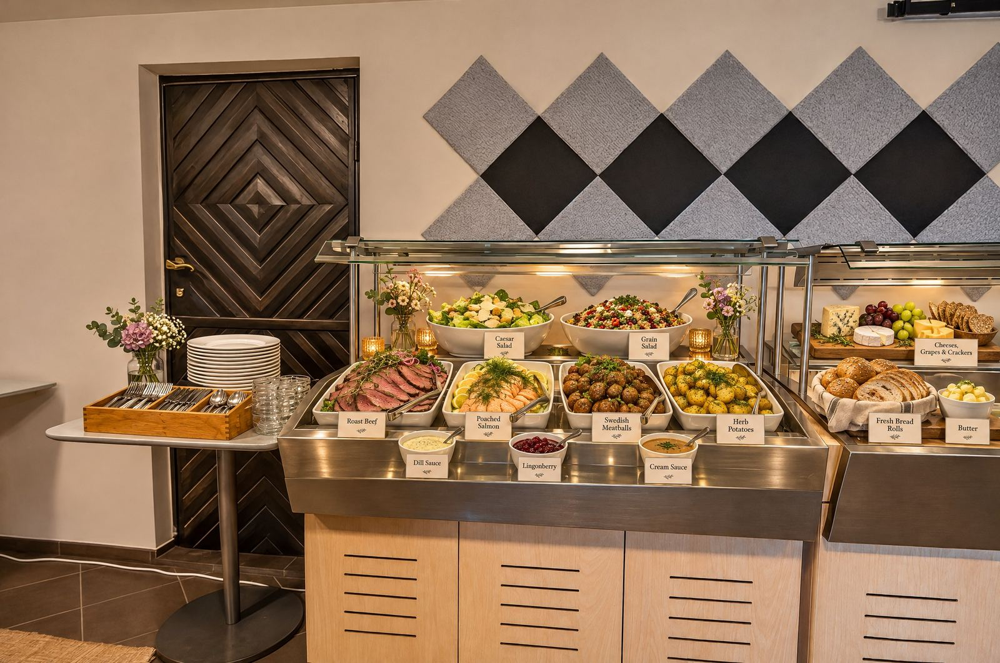
Así funciona
Un paquete, un contacto
Consulta y visita
Envíanos las fechas y el número de invitados. Ven a ver el salón cuando quieras.
Propuesta y precio
Salón, habitaciones y extras en un solo presupuesto. Los invitados pueden reservar sus habitaciones con un código propio.
La fiesta
Vosotros ponéis las mesas y la decoración el día anterior si el salón está libre. Traéis vuestra propia comida y bebida o contratáis un catering.
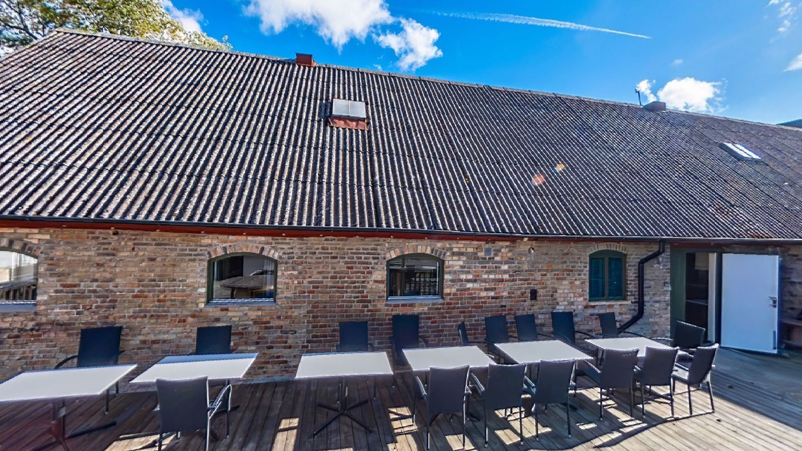
Terraza del salón de fiestas La terraza para el aperitivo y la cena al aire libre cuando alquiláis el salón.
Arrastra la imagen para mirar alrededor. Haz clic en los letreros para avanzar.
Empieza en la terraza y entra por el bar hasta el salón, el comedor y la sala grande.
Consulta
Consultar fechas libres
Los sábados de mayo a septiembre se reservan pronto. Envía una consulta y te guardamos la fecha de forma provisional durante una semana.
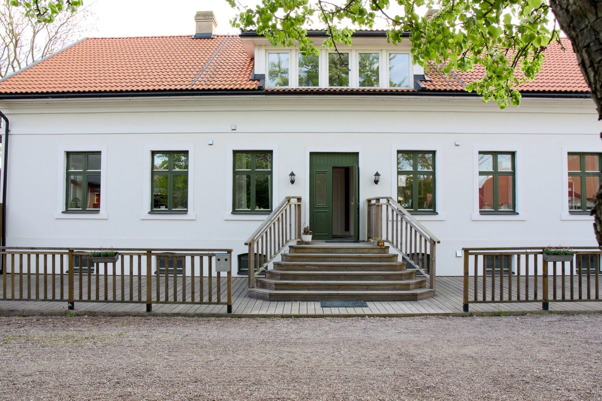
Gracias , nos ponemos en contacto
Recibirás las fechas libres y una propuesta de planteamiento en un día. En el prototipo no se envía nada de verdad.